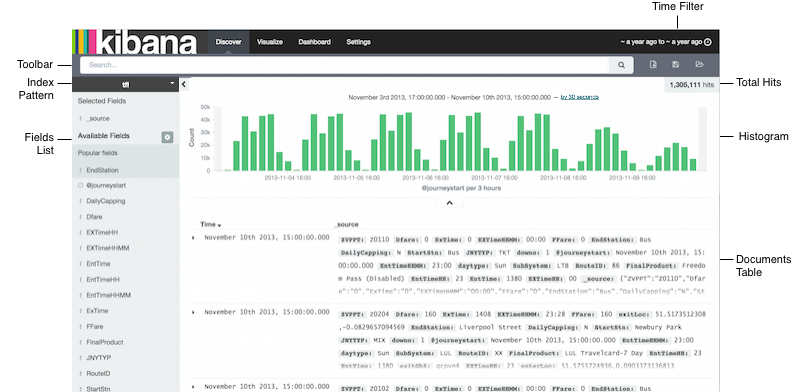

Elasticsearch + Logstash + Kibana = Logování s ❤
Tkalci na webu
Michal Valoušek — @msgre
https://github.com/msgre/elk-talk
http://ifconfig-a.com/wp-content/uploads/2014/01/App-Track-Kibana.png
http://bushorn.com/wp-content/uploads/2014/01/Flow-Activity-Monitor.jpg
http://frank2.net/wp-content/uploads/2015/08/kibana41.png
https://www.elastic.co/assets/blt45376e159402a169/Screen-Shot-2014-12-15-at-12.28.30-PM.png
Elasticsearch is a distributed, open source search and analytics engine, designed for horizontal scalability, reliability, and easy management. It combines the speed of search with the power of analytics via a sophisticated, developer-friendly query language covering structured, unstructured, and time-series data.
Logstash is a flexible, open source data collection, enrichment, and transportation pipeline. With connectors to common infrastructure for easy integration, Logstash is designed to efficiently process a growing list of log, event, and unstructured data sources for distribution into a variety of outputs, including Elasticsearch.
Kibana is an open source data visualization platform that allows you to interact with your data through stunning, powerful graphics. From histograms to geomaps, Kibana brings your data to life with visuals that can be combined into custom dashboards that help you share insights from your data far and wide.
Beats are the future of open source data shippers for Elasticsearch. From network packets to log files, infrastructure data, and beyond, Beats is the platform for building a variety of lightweight shippers to help you leverage any type of data you like.
http://blog.scottlogic.com/2014/12/19/elk-3-things-i-wish-id-known.html
Demo
Konfigurace Logstashe
$ cat /etc/logstash/conf.d/logstash.conf
input {
file {
path => "/var/log/syslog"
type => "syslog"
}
}
filter { }
output {
elasticsearch {
protocol => "transport"
host => "localhost"
cluster => "logstash"
}
}
Konfigurace Logstashe
input {
file {
path => "/var/log/syslog"
type => "syslog"
}
file {
path => "/var/log/nginx/kibana.log"
type => "kibana"
}
}
...
Kibana
https://www.elastic.co/guide/en/kibana/current/discover.html
Kibana
Search políčko
*(default) == zobrazuj vše- free text
- Lucene syntax
- Elasticsearch Query DSL
Konfigurace Logstashe
$ cat /etc/logstash/conf.d/logstash.conf
input {
file {
path => "/var/log/syslog"
type => "syslog"
}
file {
path => "/var/log/nginx/kibana.log"
type => "kibana"
}
}
filter { }
output {
elasticsearch {
protocol => "transport"
host => "localhost"
cluster => "logstash"
}
}
Konfigurace filtru
...
filter {
if [type] == "kibana" {
grok {
patterns_dir => ["/etc/logstash/patterns"]
match => ["message", "%{NGINX}"]
add_tag => ["grokked", "nginx"]
}
date {
match => ["timestamp", "dd/MMM/yyyy:HH:mm:ss Z"]
add_tag => ["dated"]
}
}
}
...
Mocný filtr grok
Parse arbitrary text and structure it.
Předdefinovaná grok pravidla
USERNAME [a-zA-Z0-9._-]+
USER %{USERNAME}
EMAILLOCALPART [a-zA-Z][a-zA-Z0-9_.+-=:]+
EMAILADDRESS %{EMAILLOCALPART}@%{HOSTNAME}
HTTPDUSER %{EMAILADDRESS}|%{USER}
INT (?:[+-]?(?:[0-9]+))
NUMBER (?:%{BASE10NUM})
...
https://github.com/logstash-plugins/logstash-patterns-core/tree/master/patterns
Custom NGINX pattern
NGINX %{IPORHOST:remote_addr} %{USER:ident}
%{USER:auth} \[%{HTTPDATE:timestamp}\]
"(?:%{WORD:method}
%{URIPATHPARAM:request}(?: HTTP/%{NUMBER:httpversion})?|-)"
%{INT:status} (?:%{INT:bytes:int}|-) "(?:%{URI:referer}|-)"
%{QS:user_agent}(?: (?:%{BASE16NUM:device_sn}|-)
%{QS:fw_version})?
Bacha! Pravidlo musí být zapsáno v jediném řádku
Demo
Lucene syntax pro search políčko
status: 200method: GETbytes: [0 TO 10000]method: GET AND status: 200 AND bytes: [0 TO 5000]
http://www.lucenetutorial.com/lucene-query-syntax.html
http://www.solrtutorial.com/solr-query-syntax.html
Výdech
Již umíme
- Nakonfigurovat file vstup do Logstashe
- Parsovat a strukturovat logy
- Zobrazit logy v Kibaně, provádět složitější dotazy
Vizualizace
http://giphy.com/gifs/psychedelic-psychedelia-trippy-visuals-1p2LyMbesY38A
Vizualizace
- Area chart
- Data table
- Line chart
- Markdown widget
- Metric
- Pie chart
- Tile map
- Vertical bar chart
Demo
Již umíme
Vše potřebné k tomu, abyste si sami rozjeli a nakonfigurovali ELK stack